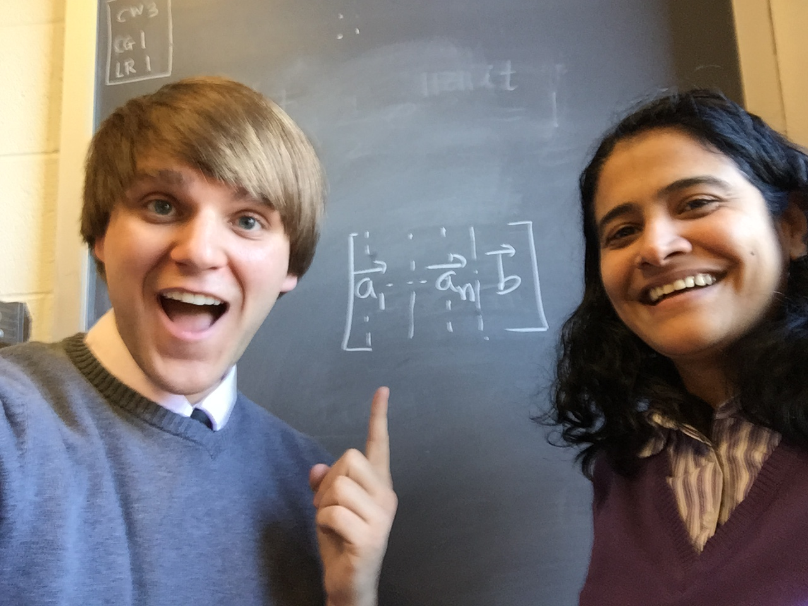

Teaching
One of the primary reasons I decided to attend graduate school at Central Michigan University was the program's concentration in the teaching of college mathematics. As part of that focus, Ph.D. students are required to complete two teaching internships - during which we are the independent instructor of an upper-level mathematics course under the daily mentorship of a faculty member. I completed internships in MTH 223: Linear Algebra & Matrix Theory with Dr. Meera Mainkar and MTH 334: Differential Equations with Dr. Leela Rakesh.
After CMU, I taught for a year at the South Carolina Governor's School for Science & Mathematics as a mathematics instructor in the virtual Accelerate program - which provides an engineering-focused curriculum to high school students across the entire state. At SC GSSM, I learned a lot about online teaching; and I've been extremely grateful for that experience during the COVID-19 pandemic.
This academic year, I am in my third year at the Illinois Science & Mathematics Academy as a faculty member in the mathematics department. Like the on-campus SC GSSM program, IMSA is a residential, publically-funded institution that serves a STEM-focused student body. At IMSA, I have been challenged as an educator to think about the fundamental aspects of teaching - especially when it comes to assessment and instruction through an equity lens. As I continue along in my professional life, I am excited to continue growing through new and diverse experiences.